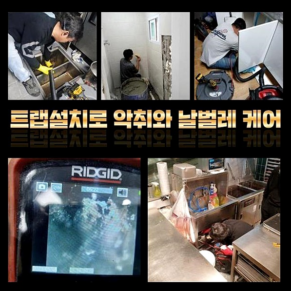
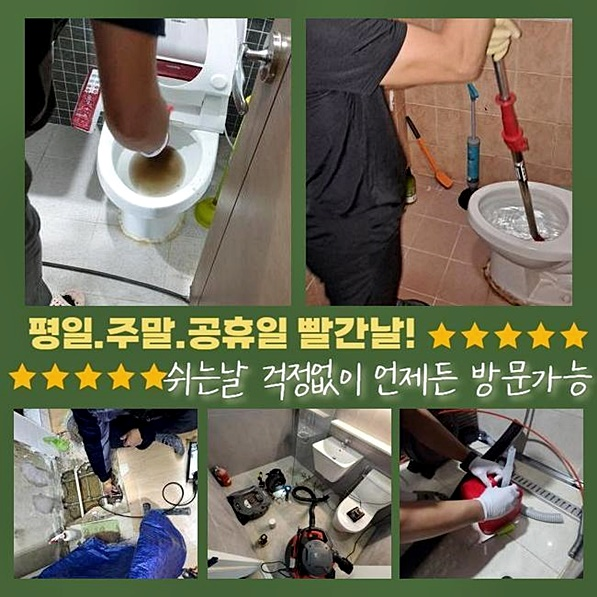
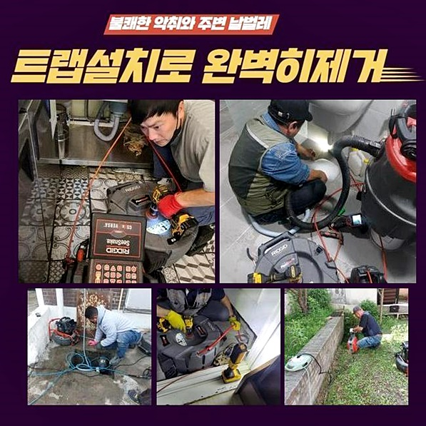
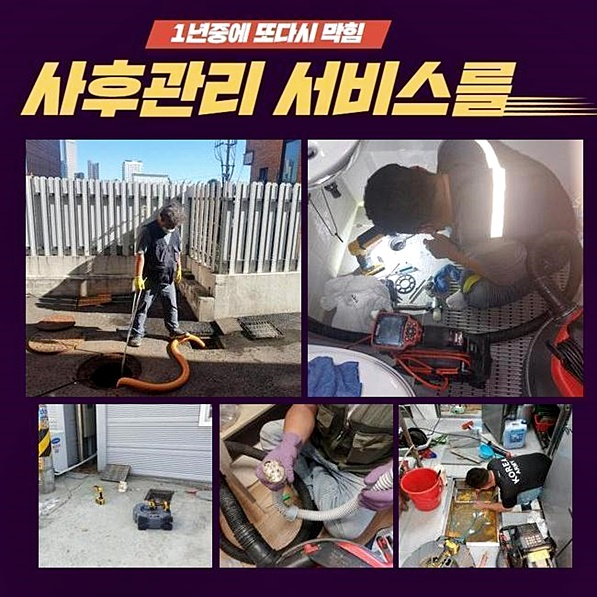
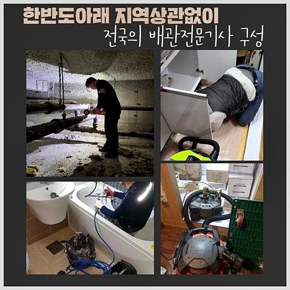

🏠 월곶동하수도막힘 포동 하수구뚫는비용 누수
용인 하수구막힘 전문 시공 후기

📋 작업 개요
- 위치: 용인
- 서비스 유형: 하수구막힘, 배관막힘, 누수수리, 뚫는업체, 배관청소, 설비공사
- 작업 일시: 2024. 9. 12. 12:24
- 업체명: 하수구수사대 (010-5615-2118)
🔍 문제 상황
월곶동하수도막힘 포동 하수구뚫는비용 누수
오늘 고치러 간 곳은 음식점의 주인이신 고객님께 의뢰받고 출장을 다녀온 것이었어요
이처럼 개인 매장을 책임지는 장소라면 꽉 막힌 하수구가 심한 방해 요소가 됩니다
식당의 오픈 자체를 꿈꾸지 못하므로 부담이 점차 눈덩이처럼 불어나니 얼른 정상화를 시켜주는 활동이 필요한 겁니다
많은 인기를 누리는 식당을 하고 계신 고객님께서는 예상치 못한 순간 수돗물의 흐름이 뚝 끊어져서 심각한 스트레스를 고스란히 겪고 계셨네요!
휴업공고를 하지않아 곧 손님들이 하나 둘 올거라고 하셔서 준비물을 철저히 챙겨넣고 문제 뚫어야 할 장소로 갔습니다
안절부절 못하는 고객님의 표정을 간파하고 얼른 문제 지점을 살펴본 결과 보자마자 다수의 문제점들이 어렵지 않게 보이더라고요!
사안을 명확하게 분석하려고 조리대에서 물을 흘려보내 봤더니 전혀 통수가 발생하지 않는 꽉 막힌 모습이었네요
사실 꽤나 오래 전 부터 불편한 문제가 감지됐는데 차후에 해결하려 미루면서 별다른 조치없니 사용하셨다고 합니다
약간이라도 막힘 증세가 의혹이 느껴질 때라면 즉시 배관 전문가에게 문의하시는 활동이 필요한 겁니다
하루에 끝나지 않는 공사건으로 이어질까 봐 긴장하시는 고객님을 달래드린 후에 막힌 쪽을 진득하게 살펴봤어요
이후는 어떤 절차를 통해서 장애를 해결해 줄 것인지에 대해서도 이어서 전달드렸습니다
수돗물의 정상적인 통수가 이뤄지지 않는 상황이니 물길을 내고자 석션 작업을 완료했어요

🔎 원인 분석
💡 전문가 진단: 정밀 진단 장비를 사용하여 슬러지의 고착 여부를 판명하고 타격/세척 작업을 실시했습니다.
주요한 진입구를 석션 작업으로 제거해 준 이후 내시경을 동작시켜서 조심스럽게 검사하기 시작했습니다
더이상의 하자없는 최종본을 받아보기 위해서는 내부를 철저히 분석하여 오류 인자를 인식하여 손봐야 합니다
단 한번의 시공 만으로도 완성도높게 뚫어내려면 뭐때문에 빚어진 일인지 추론하는 과정이 필수입니다!
오류를 찾는 스킬이 우수한 업체라 하더라도 사람의 눈으로 문제점을 알아차리는 것은 실행하기 어려워요
특수로 고안된 장비들을 동원해서 세세하게 발굴해 내는 단계가 시공의 메인입니다
하수구의 입구를 진입점으로 정해 카메라를 넣어보고서 어떤 물질이 도화선이 되어 막힘이 탄생한 것인지 체크했습니다
눈으로 보긴 어려운 깊이까지 실시간으로 체크를 해줬는데 배관 안쪽의 찌꺼기들이 꽉 차 있는 말그대로 고립 상태였어요
조금의 물이라도 흘러갈 여유가 허용되지 않게끔 철저히 가득 차버렸더라고요
골칫덩어리의 정체를 보면서 전모를 파악하고서 뭐 때문에 오류가 난건지 고객님께도 상세하게 브리핑을 해드렸습니다
통로가 열려있어야 할 하수관이 제기능을 내지 못한다면 먼저 관측 기기를 넣어서 들여다보는 게 밑바탕이 되어야 해요
그중에서도 효율적이라 생각되는 최적의 시공을 통해서 고장을 만든 쪽을 쾌적하게 처리할 수 있게 됩니다
아랫부분도 보려고 점점 깊은 곳까지 발동시켜 보며 심층부의 현황까지도 모두 색출해 냈습니다
성황리에 영업을 하는 식당은 다량의 기름과 물을 활용해야만 하므로 점점 누적된 기름때가 쌓여있는 일이 작업해 보면 빈번히 나타난답니다

🔧 작업 과정
이러한 심증적인 추리만으로 작업에 돌입하는 것이 아니라 기기의 도움을 얻어서 추정한 점을 확인하는 체계적 업무가 필요합니다
내부에 고여있는 노폐물들을 파악을 마치고 나서는 정리를 돕는 샤프트장비로 본격적으로 뚫어갔습니다
혹시 단순한 스프링 기기를 적용해선 결과물이 좋지 않냐는 의견을 내비치셨는데요
그리 중중하지 않은 문제라고 관측이 이뤄진다면 저희 역시 간단 장비만으로 문제를 고쳐보려고 시도를 하고 있어요
많은 현장에서 쓰이는 스프링장비는 스프링 타입인 이 기기는 사이사이에 오염물을 끼게 만들어서 없애는데에 효력을 발휘하게 됩니다
만약에 오랫동안 쌓여온 찌꺼기들이 응고되어 접착되어있는 경우면 아무리 시도해도 무용지물이라고 봐도 됩니다
적용장비의 정보에 대해서도 친절하게 알려드리고 동의해 주셔서 샤프트 단계에 돌입했습니다
내시경 현재 어떠한 상황인지 카메라로가며 도달하기 힘든 깊이까지도 고사양의 기기를 모니터링을 수행했습니다
영문 모르게 고장난 하수관로의 현재 모습을 뚜렷하게 볼 수 있도록 도움을 주며 모태가 되는 문제점들을 추출할 수 있게 하는 없어선 안 될 장비예요
가볍게 끌어 내는 절차만 거쳐서는 물길을 내기는 글렀다는 잠정적인 판단이 되어 덩어리진 물질을 잘게 깨서 통로를 말끔하게 형성하는 게 필요해 보였어요
오염물들이 잔여하고 남김없이 다뤄지지 않으면 똑같은 문제점들이 만성화가 될 수 있기 때문에 한번 할 때 야무진 닦아내는 게 필요했습니다
처음 제거장비를 구동시켰을 때만 해도 막힌 상태 그대로 큰 성과가 없는 듯이 느껴졌는데요
장기간 내부에 머물러 온 부패한 물질들이 뭉쳐져서 경화되어 버렸고 원형 구조가 보여야 할 내부가 뿌옇게 들어차 있었습니다
이런 조건 하에서는 작업할 때 한참 더 걸리게 되며 품도 더 들어갑니다
하자 없는 완벽시공을 목표로 잔여량이 없다 느껴질 때까지 샤프트 기기를 돌려서 활동을 계속 펼치게 됐습니다
샤프트는 헤드 부근의 쇠사슬로 딱딱한 대상을 처리하고 동시에 걸어 올려주며 내압을 회복시켜서 하수의 원만한 흐름성을 되살리는 데에 중대한 도움을 부여합니다
지속적인 업무력 투입과 알맞은 장비 활용성으로 폐쇄됐던 하수구가 조금씩 트이기 시작했어요
노력의 결과물이 점차 두드러지기 시작했고 시원스러운 폐수의 이동성을 다시금 얻게 되어 전체 프로세스까지 무리없이 성취 되었습니다
전반적으로 오염물질들이 사라졌다는 사실이 보고선 통수 기능을 보는 검수를 하게 되었어요
개수대 위의 수도밸브로 하수를 아래로 내려보내곤 가만히 살펴보니 초반과는 다르게 하수가 꼴꼴거리며 처리되는 모습이 선하게 보였네요


✅ 작업 완료
단순히 구멍만 냈다고 서둘러 마무리하지 않고 외관 기능이 다 회복됐나 야무지게 체크해서 안정화에 기여합니다
머지 않아 청소를 또 받아야한다면 출장비 및 작업 비용을 소비할 수 있으니 담당자로서 책임을 지고 편의성을 보장하기 위해서 성실하게 작업을 해드립니다!
이와 같은 하수도 설비시설에 예기치 않은 에러가 생기면 영업장소라면 더더욱 어려움을 감당하셔야 합니다
그러니 일이 벌어지기 전에 주기적으로 청소서비스를 받는 것이 문제 후의 처리보다 값어치가 있는 활동입니다
이와 유사한 고충으로 하수구 전문가의 도움이 시급하게 필요한 시점이라면 뚫리기만 기다리지 마시고 접수만 해주시면 끝납니다
맡겨주신 감사함을 가지고 불러주신 현장이 어디라도 빠른 출장을 가겠습니다



⚠️ 베란다 누수 및 방수 관리 방법
- ✅ 비가 많이 올 때 창틀 주변이나 아래층 천장에 얼룩이 생기는지 정기적으로 확인해 보세요.
- ✅ 우수관 주변 실리콘 마감이 들뜨거나 깨진 틈새가 있는지 손상 여부를 수시로 체크하세요.
- ✅ 베란다 바닥 타일의 줄눈(메지)이 소실되면 그 틈으로 물이 침투하여 누수가 유발됩니다.
- ✅ 누수 의심 증상 발견 시 방치하면 아래층 손실이 커지므로 즉시 전문가의 진단을 받으십시오.
💡 핵심 정리
- 확실한 장비 작업(내시경 점검 및 샤프트 스케일링)으로 원인을 뿌리 뽑습니다.
- 작업 후 1년 이내에 동일한 부위 재발 시 100% 무상 A/S 서비스를 보장합니다.
- 서울 · 경기 · 인천 전 지역에 24시간 언제든 긴급 출동할 수 있도록 항시 대기 중입니다.
❓ 자주 묻는 질문 (FAQ)
🚨 용인 하수구막힘 문제로 고민이신가요?
정확한 원인 진단과 확실한 시공으로 재발 없는 해결을 약속드립니다.
24시간 긴급 출동 | 서울 · 경기 · 인천 전지역 | 1년 내 재발 시 무상 A/S